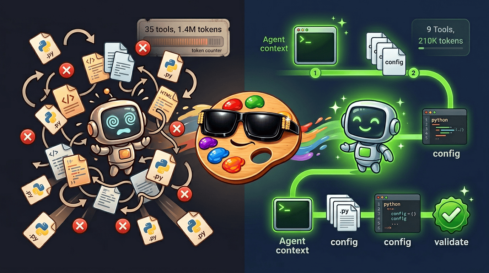
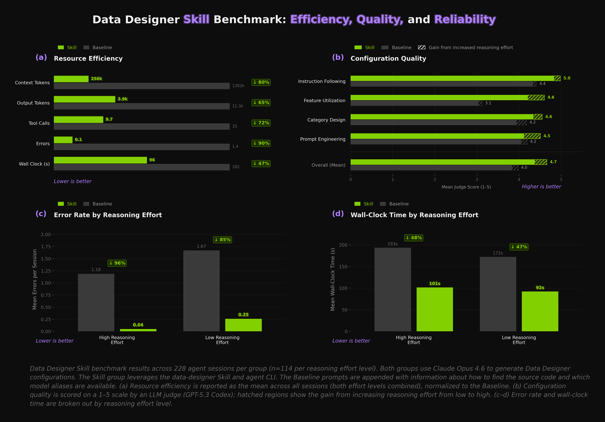

Lessons from building an agent-first CLI and skill for Data Designer
We just published the data-designer skill, which leverages agent-focused CLI commands in Data Designer to efficiently generate datasets. Just describe the dataset you want and your agent will craft the Data Designer configuration for you — schema design, validation, preview, generation — interactively or on full autopilot (just tell the agent to "be opinionated" or "surprise me").

Instead of asking agents to explore the source code, a single CLI command (data-designer agent context) delivers curated, code-derived context in one read, and three more commands (validate, preview, create) handle the rest. The agent's only job is writing the configuration. Combined with the new skill, this reduces token usage by ~80%, errors by ~90%, and wall-clock time by ~47% — all while improving output quality (mean judge score 4.0 → 4.7). We benchmarked our approach across 228 sessions each for the skill and a baseline.
In today's Dev Note, we'll walk through the challenges agents face when using new libraries, how we designed a CLI and skill to help them, and the benchmark results in detail.
TL;DR – Tips for building agent skills for your library
Consolidate your public API surface. Keep your user-facing API in a small, well-documented set of files, separate from execution internals. This can significantly reduce the number of files agents need to read in the usage context.
Build CLI commands that surface this context. Agents love CLIs! Build one that exposes code-derived API context, config validation, and workflow execution as commands — agents shouldn't have to crawl your source code or learn standard execution patterns.
Always review your session histories. This has become the "always look at your data" of 2026. Reviewing sessions was one of the most important steps in our skill development process, showing us exactly where and how agents get stuck and waste tokens.
Benchmark your skill against a baseline. We saw large gains in efficiency, error rates, and output quality, but only because we ran hundreds of controlled sessions to verify. Benchmarking along the way helped guide our design decisions and gave us confidence that we were moving in the right direction.
Agents as First-Class Users
Agents have become first-class users of basically all software. Somewhere in the last few months, we crossed a threshold. Models like Opus 4.5 and Codex 5.1, paired with maturing harnesses like Claude Code, Codex, and OpenCode, have become really good. They're real users of your library, and their experience with your API matters.
We use agents to both build Data Designer and use it to generate datasets. When we started watching how they actually interact with the tool, a pattern emerged. They spend most of their tokens in the wrong place. Crawling engine internals, reading DAG resolution logic, reconstructing the API after reading most of the source code. They get there eventually, which is impressive, but the path they take is wasteful.
The problem isn't the agent. Data Designer has a small config API — three or four files that contain nearly all the context you need for the typical use case. But nothing was pointing the agent at those files instead of the backend engine. If your library has a CLI, it's worth asking: does it serve your agent users as well as it serves your human ones? A single CLI command that delivers curated API context can replace dozens of tool calls spent on source-code exploration.
The Baseline: Let the Agent Figure It Out
To see what this looks like in practice, let's walk through a simple example. We prompted Claude Code to build a text-to-python dataset with Data Designer, providing a relatively detailed dataset description, instructions to locate the library source, and a CLI command to discover valid model aliases in the user's environment.
The prompt we used is shown below. Note that the hints at the bottom matter more than you might think. Providing the package path and the CLI commands up front streamlines the work the agent needs to do to understand the library and use it.
The prompt
I need to generate a text-to-python dataset focused on data science and analytics for
supervised fine-tuning (SFT) a code LLM.
Each record should include at least:
- A natural language instruction describing a data science task in Python.
- A difficulty level sampled from beginner, intermediate, and advanced.
- A subtopic sampled from areas like data cleaning, exploratory analysis, aggregation
and groupby operations, visualization with matplotlib/seaborn, statistical testing,
feature engineering, and working with messy or missing data.
- A complete Python solution generated by an LLM that correctly implements the instruction.
The code should be syntactically valid and self-contained.
- A code validation column that checks the generated solution for syntactic
correctness and reports any issues found.
- An LLM-as-a-judge column that scores each (instruction, solution) pair on correctness,
code quality, and instruction clarity. Use a 1-5 scale and return structured results.
The instructions should be realistic and diverse — vary the complexity, libraries used,
and required operations to match the difficulty level.
Use Data Designer for this task.
You can find the installed package directory by running:
python -c "import data_designer.config as dd, os; print(os.path.dirname(dd.__file__))"
Check the available model aliases (those with API keys) by running:
data-designer config list
Write a Python file with a function called `load_config_builder` that returns the config builder.
Validate that it is configured correctly using:
data-designer validate <path-to-python-file>
While the agent didn't exactly start from zero, we didn't give it much and it still figured it out – impressive! It found the package, explored the source, pieced together the API, and produced a valid configuration. But look at the path it took:
The main agent located the package and ran config list, then spawned a subagent to "Explore the Data Designer package thoroughly."
The subagent read 14 source files (some two or three times), hit an error on __init__.py, recovered, and returned a detailed report. 25 tool calls inside the subagent alone.
Back in the main agent, it re-read column_configs.py, validator_params.py, and config/__init__.py (files the subagent already covered), grepped for CategorySamplerParams and add_column, then wrote the config and validated.
Final tally: 35 tool calls, 1 error, 159 seconds, ~1.4M tokens between the main agent and the subagent.
AgentNow let me explore the Data Designer package structure and understand the API.
3AgentExplore — Explore Data Designer API▶ prompt (974 chars)
Explore the Data Designer package thoroughly. The package is located at:
.venv/lib/python3.13/site-packages/data_designer/
I need to understand:
1. How to create a DataDesignerConfig or ConfigBuilder — look for the main config builder API
2. What column types are available (especially for LLM generation, code validation, sampling/categorical, LLM-as-judge)
3. How columns are defined and added to a config
4. How to specify model aliases for columns
5. Any example configs or tests that show how to build a config
6. How the `data-designer validate` CLI command works (what it expects)
7. The `load_config_builder` function pattern — what should it return?
Be very thorough — check __init__.py files, column types, config module, CLI module, and any examples directory. Look at the actual class signatures and constructors.
Now I have comprehensive information about the Data Designer package. Let me compile a thorough report.
## Data Designer Package Exploration Report
I've conducted a thorough exploration of the Data Designer package located at `.venv/lib/python3.13/site-packages/data_designer/`. Here's my comprehensive understanding:
### 1. Creating a DataDesignerConfig or ConfigBuilder
**Main API:** The primary builder class is `DataDesignerConfigBuilder` located at:
- `.venv/lib/python3.13/site-packages/data_designer/config/config_builder.py`
**Constructor:**
**Key Methods:**
- `__init__()`: Initialize with optional model configs (defaults to local models) and tool configs
- `add_column()`: Add columns to the config (most commonly used)
- `add_model_config()`: Add model configurations
- `add_tool_config()`: Add MCP tool configurations
- `with_seed_dataset()`: Attach a seed dataset source
- `build()`: Returns a `DataDesignerConfig` object
- `get_builder_config()`: Returns a `BuilderConfig` wrapping the config
- `write_config()`: Save to YAML/JSON file
- `from_config()`: Create builder from existing config file or dict
**Alternative Creation:**
# From existing config file/dictbuilder=DataDesignerConfigBuilder.from_config(config_path_or_dict)
### 2. Available Column Types
**Location:** `.venv/lib/python3.13/site-packages/data_designer/config/column_types.py`
**Column Types (enum: DataDesignerColumnType):**
1. **LLM Generation Columns:**
- `llm-text` → `LLMTextColumnConfig`: Free-form text generation with Jinja2 templates
- `llm-code` → `LLMCodeColumnConfig`: Code generation with language specification (Python, SQL, JS, etc.)
- `llm-structured` → `LLMStructuredColumnConfig`: Structured JSON output using JSON schema or Pydantic models
- `llm-judge` → `LLMJudgeColumnConfig`: Multi-dimensional evaluation/scoring of other columns
2. **Sampling/Categorical Columns:**
- `sampler` → `SamplerColumnConfig`: Numerical and categorical sampling (13+ sampler types available)
3. **Code Validation:**
- `validation` → `ValidationColumnConfig`: Run validation code (Python/SQL) or call validation functions
4. **Other Column Types:**
- `seed-dataset` → `SeedDatasetColumnConfig`: Columns sourced from seed data (auto-created)
- `expression` → `ExpressionColumnConfig`: Jinja2-based derived/computed columns
- `embedding` → `EmbeddingColumnConfig`: Generate embeddings for text
- `image` → `ImageColumnConfig`: Generate images from prompts
- `custom` → `CustomColumnConfig`: User-defined generation logic with decorators
### 3. How Columns Are Defined and Added
**Two approaches:**
**Approach 1: Direct column objects**
**Column Properties:**
- Each column config extends `SingleColumnConfig` with a `column_type` discriminator field
- Columns support:
- `required_columns`: List of columns this column depends on
- `side_effect_columns`: Additional columns created as side effects (e.g., traces, reasoning_content)
- Jinja2 template validation for prompts
- Type conversion and formatting options
### 4. Model Aliases for Columns
**Location:** `.venv/lib/python3.13/site-packages/data_designer/config/models.py`
**Model Configuration:**
fromdata_designer.configimportModelConfig,ChatCompletionInferenceParamsmodel_config=ModelConfig(alias="my-claude",# User-defined alias referenced in columnsmodel="claude-3.5-sonnet",inference_parameters=ChatCompletionInferenceParams(temperature=0.7,top_p=0.95,max_tokens=2000),provider=None,# Optional custom providerskip_health_check=False)builder.add_model_config(model_config)
**Inference Parameter Types:**
- `ChatCompletionInferenceParams`: For LLM generation (temperature, top_p, max_tokens, dynamic distributions)
- `EmbeddingInferenceParams`: For embeddings (encoding_format, dimensions)
- `ImageInferenceParams`: For image generation (extra_body for model-specific options)
**Model Properties:**
- `alias`: User-defined reference used in columns (e.g., `model_alias="my-claude"`)
- `model`: Model identifier (e.g., "claude-3.5-sonnet")
- `inference_parameters`: Supports fixed values or distributions for sampling
- `generation_type`: Auto-determined from inference_parameters (chat-completion, embedding, or image)
### 5. Available Sampler Types
**Location:** `.venv/lib/python3.13/site-packages/data_designer/config/sampler_params.py`
**All Sampler Types (SamplerType enum):**
1. **Statistical Distributions:**
- `uniform`: Continuous uniform distribution
- `gaussian`: Normal/Gaussian distribution
- `binomial`: Binomial distribution (success count)
- `bernoulli`: Binary (0/1) outcome
- `bernoulli_mixture`: Mixed zero-inflation with continuous distribution
- `poisson`: Poisson count distribution
- `scipy`: Any scipy.stats distribution
2. **Categorical/Discrete:**
- `category`: Discrete categories with optional weights
- `subcategory`: Hierarchical sampling based on parent category
3. **Temporal:**
- `datetime`: Uniform datetime sampling within range
- `timedelta`: Time offset relative to reference column
4. **Special:**
- `uuid`: UUID generation (with optional prefix/formatting)
- `person`: Synthetic person data with demographic filtering (from managed datasets or Faker)
- `person_from_faker`: Pure Faker-based person generation
### 6. `data-designer validate` CLI Command
**Location:** `.venv/lib/python3.13/site-packages/data_designer/cli/commands/validate.py`
**Usage:**
data-designervalidate<config_source>
**What it validates:**
- Checks configuration is well-formed
- Resolves all references (models, columns, seed datasets, etc.)
- Validates model aliases are defined
- Validates column dependencies and required columns
- Checks constraint validity
- Validates processor configurations
**Accepted Config Sources:**
1. **YAML/JSON files**: Local paths or HTTP(S) URLs
2. **Python modules**: `.py` files that define a `load_config_builder()` function
**Controller Implementation:**
# In GenerationController.run_validate()data_designer=DataDesigner()data_designer.validate(config_builder)
Exits with code 0 on success, code 1 on validation failure.
### 7. `load_config_builder` Function Pattern
**Location:** `.venv/lib/python3.13/site-packages/data_designer/cli/utils/config_loader.py`
**Function Signature Required:**
**What it should return:**
- A `DataDesignerConfigBuilder` instance (not BuilderConfig, not DataDesignerConfig)
- The builder is used by the CLI to access the full configuration
**Validation Requirements:**
1. The `.py` file **must** define `load_config_builder()` function
2. Function must be callable and return exactly a `DataDesignerConfigBuilder`
3. The CLI will call this function and validate the returned builder
4. The parent directory of the `.py` file is temporarily added to sys.path to support local imports
**Example Pattern:**
45:class CategorySamplerParams(ConfigBase):
46- """Parameters for categorical sampling with optional probability weighting.
47-
48- Samples values from a discrete set of categories. When weights are provided, values are
49- sampled according to their assigned probabilities. Without weights, uniform sampling is used.
50-
51- Attributes:
52- values: List of possible categorical values to sample from. Can contain strings, integers,
53- or floats. Must contain at least one value.
54- weights: Optional unnormalized probability weights for each value. If provided, must be
55- the same length as `values`. Weights are automatically normalized to sum to 1.0.
56- Larger weights result in higher sampling probability for the corresponding value.
57- """
58-
59- values: list[str | int | float] = Field(
60- ...,
61- min_length=1,
62- description="List of possible categorical values that can be sampled from.",
63- )
64- weights: list[float] | None = Field(
65- default=None,
8Grepdef add_column▶ results (1,590 chars)
267: def add_column(
268- self,
269- column_config: ColumnConfigT | None = None,
270- *,
271- name: str | None = None,
272- column_type: DataDesignerColumnType | None = None,
273- **kwargs,
274- ) -> Self:
275- """Add a Data Designer column configuration to the current Data Designer configuration.
276-
277- If no column config object is provided, you must provide the `name`, `column_type`, and any
278- additional keyword arguments that are required by the column config constructor.
279-
280- Args:
281- column_config: Data Designer column config object to add.
282- name: Name of the column to add. This is only used if `column_config` is not provided.
283- column_type: Column type to add. This is only used if `column_config` is not provided.
284- **kwargs: Additional keyword arguments to pass to the column constructor.
285-
286- Returns:
287- The current Data Designer config builder instance.
288-
289- Raises:
290- BuilderConfigurationError: If the column name collides with an existing seed dataset column.
291- """
292- if column_config is None:
293- if name is None or column_type is None:
294- raise BuilderConfigurationError(
295- "🛑 You must provide either a 'column_config' object or 'name' *and* 'column_type' "
296- f"with additional keyword arguments. You provided {column_config=}, {name=}, and {column_type=}."
297- )
AgentNow I have everything I need. Let me write the config file.
9Writeconfig.py▶ written content (6,872 chars)
from data_designer.config import (
CategorySamplerParams,
CodeLang,
CodeValidatorParams,
DataDesignerConfigBuilder,
LLMCodeColumnConfig,
LLMJudgeColumnConfig,
LLMTextColumnConfig,
SamplerColumnConfig,
Score,
ValidationColumnConfig,
ValidatorType,
)
def load_config_builder() -> DataDesignerConfigBuilder:
builder = DataDesignerConfigBuilder()
# --- Difficulty level ---
builder.add_column(
SamplerColumnConfig(
name="difficulty",
sampler_type="category",
params=CategorySamplerParams(
values=["beginner", "intermediate", "advanced"],
weights=[0.35, 0.40, 0.25],
),
)
)
# --- Subtopic ---
builder.add_column(
SamplerColumnConfig(
name="subtopic",
sampler_type="category",
params=CategorySamplerParams(
values=[
"data cleaning",
"exploratory analysis",
"aggregation and groupby operations",
"visualization with matplotlib/seaborn",
"statistical testing",
"feature engineering",
"working with messy or missing data",
],
),
)
)
# --- Natural language instruction ---
builder.add_column(
LLMTextColumnConfig(
name="instruction",
model_alias="nvidia-text",
prompt=(
"Write a clear, specific natural-language instruction for a {{ difficulty }}-level "
"Python data science task in the area of {{ subtopic }}.\n\n"
"The instruction should describe a concrete problem that a data scientist might encounter "
"and should be solvable in a single self-contained Python script. "
"Do NOT include any code in your response — only the task description.\n\n"
"Vary the complexity to match the difficulty level:\n"
"- beginner: simple operations using pandas, basic plots, straightforward cleaning\n"
"- intermediate: multi-step workflows, combining libraries, moderate data manipulation\n"
"- advanced: complex pipelines, statistical modeling, performance optimization, "
"advanced visualization techniques\n\n"
"Return only the instruction text, nothing else."
),
)
)
# --- Python solution ---
builder.add_column(
LLMCodeColumnConfig(
name="solution",
model_alias="nvidia-reasoning",
code_lang=CodeLang.PYTHON,
prompt=(
"Write a complete, self-contained Python solution for the following "
"{{ difficulty }}-level data science task:\n\n"
"{{ instruction }}\n\n"
"Requirements:\n"
"- The code must be syntactically valid and runnable as-is.\n"
"- Include all necessary imports.\n"
"- Generate or define any sample data needed (do not load from external files).\n"
"- Use appropriate libraries (pandas, numpy, matplotlib, seaborn, scipy, "
"scikit-learn, etc.) as needed.\n"
"- Add brief inline comments explaining key steps.\n"
"- Follow Python best practices and PEP 8 style.\n"
),
)
)
# --- Code validation ---
builder.add_column(
ValidationColumnConfig(
name="code_validation",
target_columns=["solution"],
validator_type=ValidatorType.CODE,
validator_params=CodeValidatorParams(code_lang=CodeLang.PYTHON),
)
)
# --- LLM-as-judge evaluation ---
builder.add_column(
LLMJudgeColumnConfig(
name="quality_score",
model_alias="nvidia-reasoning",
prompt=(
"Evaluate the following Python data science solution against its instruction.\n\n"
"**Difficulty:** {{ difficulty }}\n"
"**Subtopic:** {{ subtopic }}\n\n"
"**Instruction:**\n{{ instruction }}\n\n"
"**Solution:**\n```python\n{{ solution }}\n```\n\n"
"Score the solution on each dimension below. Be rigorous but fair."
),
scores=[
Score(
name="correctness",
description=(
"Does the code correctly implement what the instruction asks for? "
"Consider logical correctness, proper use of libraries, and whether "
"the output would match expectations."
),
options={
1: "Completely wrong or does not address the instruction",
2: "Major errors that would produce incorrect results",
3: "Partially correct but has notable issues",
4: "Mostly correct with minor issues",
5: "Fully correct and complete implementation",
},
),
Score(
name="code_quality",
description=(
"Assess the code style, readability, and Pythonic practices. "
"Consider variable naming, structure, comments, and adherence "
"to best practices."
),
options={
1: "Very poor quality, unreadable or badly structured",
2: "Below average, multiple style issues",
3: "Acceptable but could be improved",
4: "Good quality, clean and well-structured",
5: "Excellent quality, exemplary Python code",
},
),
Score(
name="instruction_clarity",
description=(
"How clear and well-defined is the original instruction? "
"Consider whether the task is unambiguous, specific enough to implement, "
"and appropriately scoped for the stated difficulty level."
),
options={
1: "Vague or incomprehensible instruction",
2: "Unclear, missing important details",
3: "Adequate but could be more specific",
4: "Clear and well-defined",
5: "Excellent clarity, perfectly scoped for difficulty level",
},
),
],
)
)
return builder
File created successfully at: ./config.py
AgentNow let me validate it.
10Bash.venv/bin/data-designer validate config.py
────────────────────────── Data Designer Validate ──────────────────────────
Config: config.py
[21:25:04] [INFO] ✅ Validation passed
✅ Configuration is valid
Agent▶ message (999 chars)
The configuration validates successfully. Here's what the pipeline does:
1. **`difficulty`** — Sampler column that randomly picks from beginner (35%), intermediate (40%), advanced (25%)
2. **`subtopic`** — Sampler column that uniformly samples from 7 data science subtopics (data cleaning, exploratory analysis, aggregation/groupby, visualization, statistical testing, feature engineering, messy/missing data)
3. **`instruction`** — LLM text column (`nvidia-text`) that generates a natural language task description conditioned on the difficulty and subtopic
4. **`solution`** — LLM code column (`nvidia-reasoning`) that generates a complete, self-contained Python solution for the instruction
5. **`code_validation`** — Validation column that checks the generated Python code for syntactic correctness
6. **`quality_score`** — LLM judge column (`nvidia-reasoning`) that scores each (instruction, solution) pair on three dimensions (correctness, code quality, instruction clarity) using a 1–5 scale
While this session started from a clear context, real sessions often don't start that way. There's prior context from the user's other work, back-and-forth as they iterate with the agent on the design, maybe a second or third run. Every token spent on exploration is context budget that can't go toward the actual task. Lean context is essential for multi-turn sessions.
Shortening the Path: Data Designer's Agent CLI and Skill
Data Designer's CLI was previously only used for model configuration and downloading assets. But agents are first-class users now, and they already know how to run commands and read stdout. We saw an opportunity to extend the CLI with commands designed specifically for agent consumption. The data-designer skill leverages these new commands with workflows for interactive and autopilot dataset generation.
# Bootstrap all code-derived agent context
data-designeragentcontext
# Validate a config script
data-designervalidate<file-path>
# Generate a small sample to inspect and iterate on
data-designerpreview<file-path>
# Generate the full dataset
data-designercreate<file-path>--num-records<N>--dataset-name<name>
agent context dynamically generates a structured reference from the library's source code. Column types, sampler parameters, validator configs, constraints, processors, available model aliases with their providers, installed persona datasets, and the exact files to read for needed context — everything the subagent spent 25 tool calls piecing together, delivered in one read. Because the output is derived from the code at runtime, it stays in sync as the API evolves.
The other three commands standardize config validation and dataset generation. validate catches config errors before any generation tokens are spent. preview generates a small sample to inspect and iterate on (the agent can enter this self-improvement loop on its own). create runs the full generation. Everything downstream of the configuration is Data Designer's domain. DAG construction, batching, execution. The agent never touches it.
Coding best practices still matter
Data Designer's modular design and clear boundary between configuration and execution predates any agent work. This design, which we chose for testability and maintainability, turns out to be exactly what agents need – a small, predictable set of files that fully describes the API surface. agent context exploits this boundary. It dumps the config layer and nothing else. If your library has a similar separation, you're already most of the way there. You just need to surface it.
The Skill in action
Let's see the skill in action. Same dataset task as before, but this time the prompt is just the dataset description. No package path, no config list, no validate command. The skill provides all of that.
The prompt
I need to generate a text-to-python dataset focused on data science and analytics for
supervised fine-tuning (SFT) a code LLM.
Each record should include at least:
- A natural language instruction describing a data science task in Python.
- A difficulty level sampled from beginner, intermediate, and advanced.
- A subtopic sampled from areas like data cleaning, exploratory analysis, aggregation
and groupby operations, visualization with matplotlib/seaborn, statistical testing,
feature engineering, and working with messy or missing data.
- A complete Python solution generated by an LLM that correctly implements the instruction.
The code should be syntactically valid and self-contained.
- A code validation column that checks the generated solution for syntactic
correctness and reports any issues found.
- An LLM-as-a-judge column that scores each (instruction, solution) pair on correctness,
code quality, and instruction clarity. Use a 1-5 scale and return structured results.
The instructions should be realistic and diverse — vary the complexity, libraries used,
and required operations to match the difficulty level.
▶SkillTypical Skill Session9 tools0 errors92s
AgentI'll start by learning about the Data Designer library to understand the available column types, samplers, validators, and processors.
Data Designer v0.5.4rc2
## Config Module
The config module contains all user-facing configuration types. Do not search other modules in the library.
config_root: .venv/lib/python3.13/site-packages/data_designer/config
builder: {config_root}/config_builder.py
base: {config_root}/base.py (read for inherited fields shared by columns and processors)
All config types are accessible via: import data_designer.config as dd
## Types
### columns
file: {config_root}/column_configs.py
type description
------------------------- ---------------------------------------------------------------------------------
CustomColumnConfig Configuration for custom user-defined column generators.
EmbeddingColumnConfig Configuration for embedding generation columns.
ExpressionColumnConfig Configuration for derived columns using Jinja2 expressions.
ImageColumnConfig Configuration for image generation columns.
LLMCodeColumnConfig Configuration for code generation columns using Large Language Models.
LLMJudgeColumnConfig Configuration for LLM-as-a-judge quality assessment and scoring columns.
LLMStructuredColumnConfig Configuration for structured JSON generation columns using Large Language Models.
LLMTextColumnConfig Configuration for text generation columns using Large Language Models.
SamplerColumnConfig Configuration for columns generated using numerical samplers.
SeedDatasetColumnConfig Configuration for columns sourced from seed datasets.
ValidationColumnConfig Configuration for validation columns that validate existing columns.
### constraints
file: {config_root}/sampler_constraints.py
type description
-------------------------- --------------------------------------------------------------------------
ColumnInequalityConstraint Constrain a sampler column to be less/greater than another sampler column.
ScalarInequalityConstraint Constrain a sampler column to be less/greater than a scalar value.
### processors
file: {config_root}/processors.py
type description
------------------------------ ---------------------------------------------------------------------------------
DropColumnsProcessorConfig Drop columns from the output dataset (prefer ``drop=True`` in the column config).
SchemaTransformProcessorConfig Configuration for transforming the dataset schema using Jinja2 templates.
### samplers
file: {config_root}/sampler_params.py
type description
----------------------------- -------------------------------------------------------------------------------------
BernoulliSamplerParams Parameters for sampling from a Bernoulli distribution.
BernoulliMixtureSamplerParams Parameters for sampling from a Bernoulli mixture distribution.
BinomialSamplerParams Parameters for sampling from a Binomial distribution.
CategorySamplerParams Parameters for categorical sampling with optional probability weighting.
DatetimeSamplerParams Parameters for uniform datetime sampling within a specified range.
GaussianSamplerParams Parameters for sampling from a Gaussian (Normal) distribution.
PersonSamplerParams Parameters for sampling synthetic person data with demographic attributes.
PersonFromFakerSamplerParams Parameters for sampling synthetic person data with demographic attributes from Faker.
PoissonSamplerParams Parameters for sampling from a Poisson distribution.
ScipySamplerParams Parameters for sampling from any scipy.stats continuous or discrete distribution.
SubcategorySamplerParams Parameters for subcategory sampling conditioned on a parent category column.
TimeDeltaSamplerParams Parameters for sampling time deltas relative to a reference datetime column.
UniformSamplerParams Parameters for sampling from a continuous Uniform distribution.
UUIDSamplerParams Parameters for generating UUID (Universally Unique Identifier) values.
### validators
file: {config_root}/validator_params.py
type description
---------------------------- -----------------------------------------------------------------------------------------------------
CodeValidatorParams Configuration for code validation. Supports Python and SQL code validation.
LocalCallableValidatorParams Configuration for local callable validation. Expects a function to be passed that validates the data.
RemoteValidatorParams Configuration for remote validation. Sends data to a remote endpoint for validation.
## Model Aliases
default_provider: nvidia
model_alias model generation_type provider
---------------- --------------------------------- --------------- --------
nvidia-embedding nvidia/llama-3.2-nv-embedqa-1b-v2 embedding nvidia
nvidia-reasoning openai/gpt-oss-20b chat-completion nvidia
nvidia-text nvidia/nemotron-3-nano-30b-a3b chat-completion nvidia
nvidia-vision nvidia/nemotron-nano-12b-v2-vl chat-completion nvidia
openai-embedding text-embedding-3-large embedding openai
openai-reasoning openai/openai/gpt-5.2 chat-completion openai
openai-text us/azure/openai/gpt-4.1 chat-completion openai
openai-vision openai/openai/gpt-5.2 chat-completion openai
## Persona Datasets
locale size installed
---------- ------- ---------
en_IN 2.39 GB True
en_SG 0.30 GB True
en_US 1.24 GB True
hi_Deva_IN 4.14 GB True
hi_Latn_IN 2.7 GB True
ja_JP 1.69 GB True
pt_BR 2.33 GB True
## Commands
command_pattern description
------------------------------------------ -------------------------------------------------------------------
data-designer agent context Prints output from all agent subcommands to bootstrap context.
data-designer agent types [family] Type names, descriptions, and source files for one or all families.
data-designer agent state model-aliases Model aliases and usability status.
data-designer agent state persona-datasets Persona locales and install status.
AgentNow let me inspect the specific config schemas I'll need.
2Readdata_designer/config/base.py
3Readdata_designer/config/column_configs.py
4Readdata_designer/config/sampler_params.py
5Readdata_designer/config/validator_params.py
6Readdata_designer/config/config_builder.py
7Readdata_designer/config/processors.py
Agent▶ message (863 chars)
Now I have a complete understanding of the library. Here are my key design decisions:
**Schema:**
1. `difficulty` — Category sampler: beginner, intermediate, advanced (equal weights)
2. `subtopic` — Category sampler: 7 data science subtopics
3. `instruction` — LLM text column: generates a natural language task description conditioned on difficulty + subtopic
4. `solution` — LLM code column (Python): generates a complete solution conditioned on instruction + difficulty + subtopic
5. `code_validation` — Validation column (code validator, Python): checks syntactic correctness of the solution
6. `quality_score` — LLM judge column: scores correctness, code quality, and instruction clarity on 1-5 scale
**Diversity axes:** difficulty x subtopic combinations ensure broad coverage. The LLM prompts emphasize varying libraries, complexity, and operation types.
8Writetext_to_python.py▶ written content (7,540 chars)
# /// script
# dependencies = [
# "data-designer",
# ]
# ///
import data_designer.config as dd
def load_config_builder() -> dd.DataDesignerConfigBuilder:
config_builder = dd.DataDesignerConfigBuilder()
# 1. Difficulty level
config_builder.add_column(
dd.SamplerColumnConfig(
name="difficulty",
sampler_type="category",
params=dd.CategorySamplerParams(
values=["beginner", "intermediate", "advanced"],
),
)
)
# 2. Subtopic
config_builder.add_column(
dd.SamplerColumnConfig(
name="subtopic",
sampler_type="category",
params=dd.CategorySamplerParams(
values=[
"data cleaning",
"exploratory analysis",
"aggregation and groupby operations",
"visualization with matplotlib/seaborn",
"statistical testing",
"feature engineering",
"working with messy or missing data",
],
),
)
)
# 3. Natural language instruction
config_builder.add_column(
dd.LLMTextColumnConfig(
name="instruction",
model_alias="nvidia-text",
system_prompt=(
"You are an expert data science educator who writes clear, realistic Python coding tasks. "
"Your instructions should be specific enough that a developer can implement a complete solution "
"without ambiguity. Vary the libraries used (pandas, numpy, scipy, sklearn, matplotlib, seaborn, etc.) "
"and the operations required to match the difficulty level."
),
prompt=(
"Write a single, self-contained Python coding instruction for a {{ difficulty }}-level data science task "
"in the subtopic of '{{ subtopic }}'.\n\n"
"Requirements:\n"
"- The task should be realistic and something a data scientist would actually encounter.\n"
"- For beginner tasks, focus on simple operations with clear steps.\n"
"- For intermediate tasks, combine multiple operations or require domain knowledge.\n"
"- For advanced tasks, involve complex logic, performance considerations, or sophisticated techniques.\n"
"- The instruction should describe what the code should do, including any expected input/output behavior.\n"
"- Do NOT include the solution — only the task description.\n\n"
"Return only the instruction text, nothing else."
),
)
)
# 4. Python solution
config_builder.add_column(
dd.LLMCodeColumnConfig(
name="solution",
model_alias="nvidia-text",
code_lang="python",
system_prompt=(
"You are an expert Python data scientist. Write clean, well-structured, and correct Python code. "
"The code must be completely self-contained — include all necessary imports, sample data creation, "
"and function definitions. Do not rely on external files or databases. "
"Use realistic variable names and follow PEP 8 conventions."
),
prompt=(
"Write a complete, self-contained Python solution for the following {{ difficulty }}-level "
"data science task in the area of '{{ subtopic }}'.\n\n"
"Task:\n{{ instruction }}\n\n"
"Requirements:\n"
"- Include all necessary imports at the top.\n"
"- Create any sample/mock data needed so the code runs independently.\n"
"- The code must be syntactically valid and runnable as-is.\n"
"- Match the complexity to the {{ difficulty }} level.\n"
"- Add brief inline comments explaining key steps.\n\n"
"Return only the Python code."
),
)
)
# 5. Code validation
config_builder.add_column(
dd.ValidationColumnConfig(
name="code_validation",
target_columns=["solution"],
validator_type="code",
validator_params=dd.CodeValidatorParams(code_lang="python"),
)
)
# 6. LLM-as-a-judge quality scoring
config_builder.add_column(
dd.LLMJudgeColumnConfig(
name="quality_score",
model_alias="nvidia-text",
prompt=(
"Evaluate the following Python data science coding task and its solution.\n\n"
"Difficulty: {{ difficulty }}\n"
"Subtopic: {{ subtopic }}\n\n"
"Instruction:\n{{ instruction }}\n\n"
"Solution:\n{{ solution }}\n\n"
"Score each dimension below on a 1-5 scale using the provided rubrics."
),
scores=[
dd.Score(
name="correctness",
description=(
"Does the solution correctly implement what the instruction asks for? "
"Consider whether the code logic is sound, handles edge cases appropriately, "
"and would produce the expected output."
),
options={
1: "Completely incorrect or does not address the instruction.",
2: "Major logical errors; partially addresses the instruction.",
3: "Mostly correct with minor bugs or missing edge cases.",
4: "Correct implementation with only trivial issues.",
5: "Fully correct, handles edge cases, and produces expected output.",
},
),
dd.Score(
name="code_quality",
description=(
"Assess the code quality including readability, proper use of libraries, "
"PEP 8 compliance, appropriate variable naming, and idiomatic Python/pandas usage."
),
options={
1: "Very poor quality: unreadable, no structure, bad naming.",
2: "Below average: some structure but many style issues.",
3: "Acceptable: readable but could improve in idiom or style.",
4: "Good: clean, well-structured, follows conventions.",
5: "Excellent: idiomatic, elegant, and highly readable.",
},
),
dd.Score(
name="instruction_clarity",
description=(
"How clear and unambiguous is the instruction? Could a competent developer "
"implement the solution from the instruction alone without guessing?"
),
options={
1: "Extremely vague or incomprehensible.",
2: "Unclear with significant ambiguity.",
3: "Understandable but some details are missing or ambiguous.",
4: "Clear with only minor room for interpretation.",
5: "Crystal clear, specific, and unambiguous.",
},
),
],
)
)
return config_builder
Note: generation can take a long time for large record counts (50+), so choose `N` accordingly.
The skill session followed a direct, linear path: agent context → read 6 config files → write config → validate. 9 tools, 0 errors, 92 seconds, ~210k tokens. Compare that to the baseline: 35 tools, 1 error, 159 seconds, ~1.4M tokens.
Of course, these are individual sessions, and there's variance in both directions. Sometimes the baseline finds a lucky path and performs closer to the skill. Sometimes the skill takes a wrong turn. That said, the examples above are representative of the typical (median) outcomes we observed. To see whether the pattern holds, we ran 228 sessions each for the skill and baseline, as described in the next section.
Measuring the Difference

Evaluating agent skills is harder than it might seem. Behavior is non-deterministic, sensitive to context, and varies with prompt wording. Environment isolation is critical — coding agents explore their surroundings before they start working, so if a baseline session can discover the skill files on disk, it will use them. We observed this failure mode early on and had to ensure each session got a fully isolated environment. LangChain's writeup on evaluating skills is an excellent read that covers many of the same challenges.
In our experiment setup, each session started from a clean slate (new directory, fresh git history, clean venv with no skill files present for baseline runs). We used the text-to-python use case across three prompt detail levels (low, medium, high), half at high reasoning effort and half at low. Claude Code was run in headless mode (i.e., claude -p <prompt>). Each session ends when the agent produces a validated configuration — we stop at data-designer validate rather than running full generation, both for easier automation and because once the config is valid, generation is just a simple data-designer create away. The main results are shown in the figure above and are summarized below.
⚡ Our skill and agent CLI use ~80% fewer tokens (panel a). The skill replaces source-code exploration with directed context. Output tokens fall 65%, tool calls 72%, errors 90%, wall clock time 47%. Every downstream metric improves.
📈 Beyond the efficiency gains, the skill also produces higher-quality results (panel b). We used an LLM judge (GPT-5.3 Codex) on a 1–5 scale. Mean quality score went from 4.0 → 4.7. The standout is feature utilization — how well the agent uses the library's capabilities — which jumped 3.1 → 4.6. The skill surfaces capabilities like diversity axes, sampler types, and validators directly in the context.
🛡️ Errors are nearly eliminated at high reasoning effort (panel c). Mean errors per session drop from 1.18 → 0.04 when reasoning effort is high, and 1.67 → 0.25 when it's low. Fewer errors mean fewer recovery loops, fewer tokens burned on retries, less chance of the agent going down a dead end. The table below breaks down where the errors come from. The skill nearly wipes out file/path and import errors, and cuts config validation failures by more than two-thirds.
Error Breakdown by Category
Group
Total
%
Baseline
Skill
File/Path Not Found
228
63.5%
216
12
Config Validation Failures
92
25.6%
70
22
Import Errors
32
8.9%
32
0
Tool/Environment Issues
7
1.9%
7
0
⏱️ Wall-clock time is cut roughly in half (panel d).193s → 101s with high reasoning, 172s → 92s with low. Less exploration, fewer errors, fewer retries. The time savings follow naturally.
Getting Started
First, you will need to install Data Designer and set up your model providers. The quickstart guide in our README walks through this. We recommend using a virtual environment to manage dependencies.
Next, install the skill. Note that while the skill should work with other coding agents that support skills, our development and testing has focused on Claude Code at this stage.
When prompted, make sure to select Claude Code as an additional agent.
After installation, open Claude Code and type /data-designer, or just tell it you want to generate a dataset along with a description of what you want and the skill will kick in.
The skill has two modes. In interactive mode (the default), the agent asks clarifying questions and has you make key design decisions (diversity axes, sampling strategies, model selection). You review sample records, give feedback, and iterate until it's right.
Autopilot mode is the opposite. The agent reads your description, makes its own design decisions (and tells you what they are), then validates and generates without waiting. To enter this mode, just tell the agent to "be opinionated", "surprise me", or imply that you don't want to be involved in the design process.
Both produce the same artifact. A standalone Python script calling Data Designer's public API. Re-runnable, modifiable, version-controllable.
What's Next
Everything described in this post is live, and we're paying close attention to how people use it. Feedback from early adopters is very welcome and will help us shape what comes next.
On the automation side, the agent already asks if you want it to review the generated dataset and suggest improvements. We're working on closing that loop (generate config, preview, review, improve, repeat) so the agent runs a few iterations on its own before handing you the result.
We also plan to add domain-specific SDG references that the agent can draw on for specialized use cases (healthcare, finance, legal, etc.). The goal is for the agent to bring domain expertise to dataset design alongside library knowledge.